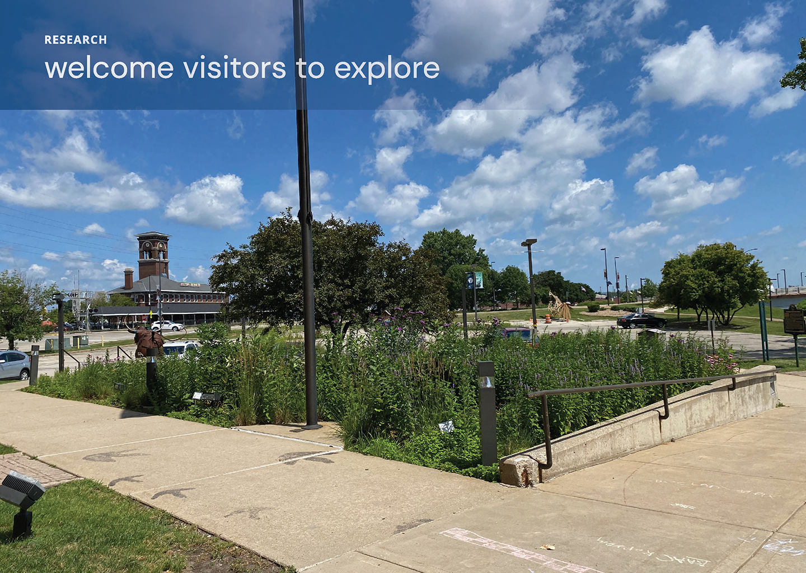
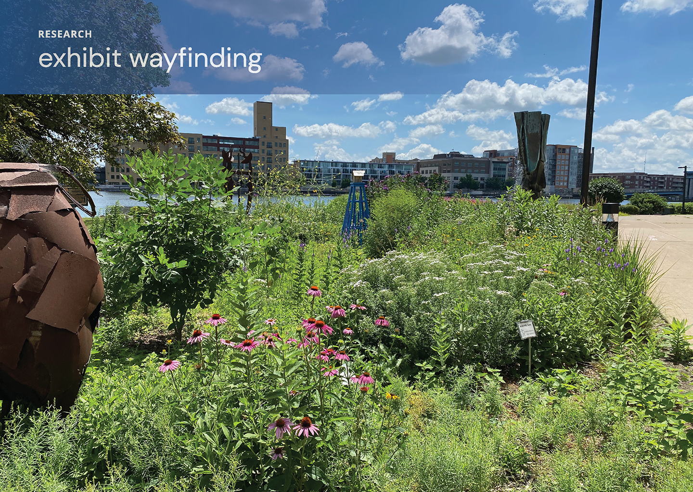
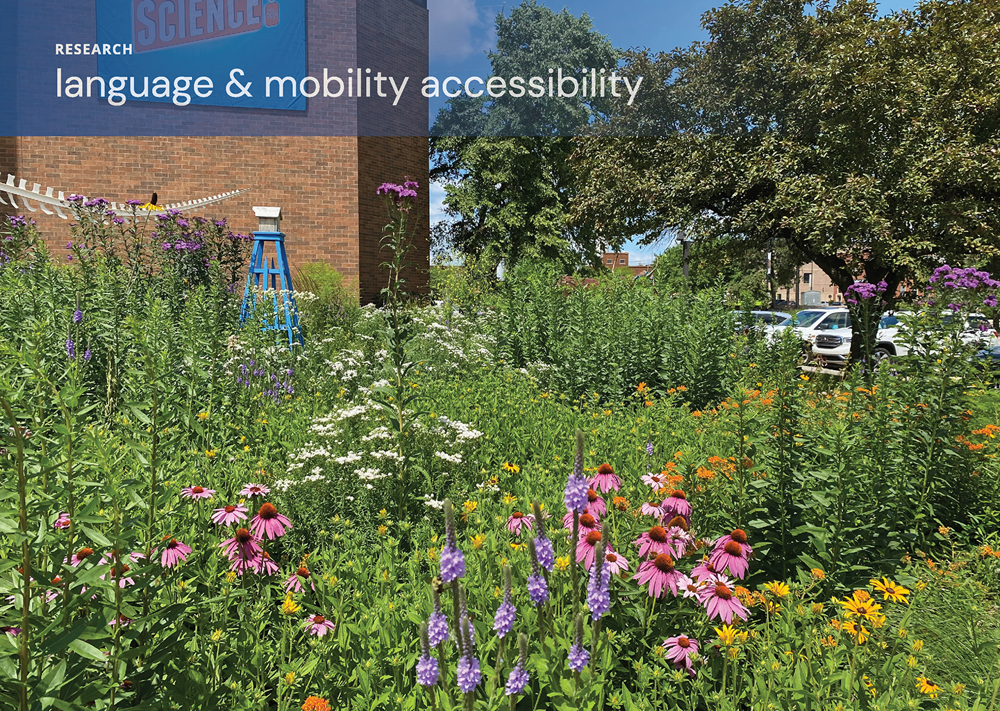
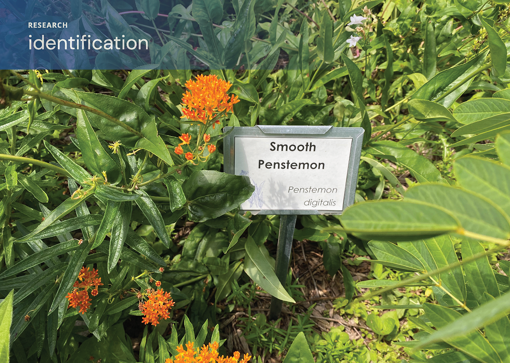

Capstone Presentation
Neville Public Museum Pollination Garden
Problem |
Research |
Solution |
Capstone Presentation
   
Mobile App |
Motion Design |
Interactive Kiosk |
Social Media Campaign |
Instagram Filters |
Capstone Presentation |